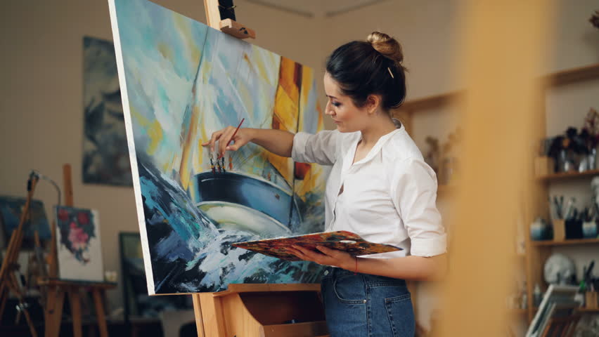

About Me

Creating takes Anuja out of linear time, and she is addicted to that freedom. Her purpose is to capture a fleeting moment...and to stop it in time. She paints experiences that she wants to have again and to share them. Anuja has been working (and playing) primarily in watercolor; she loves the luminosity, the fluidity, the risk, the accidental magic and the dance between her intentions and a lack of control that comes with a medium that is wet and fluid, but dries so quickly.